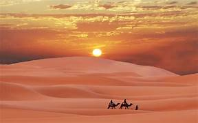
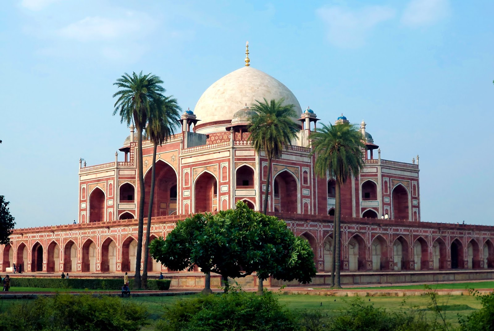
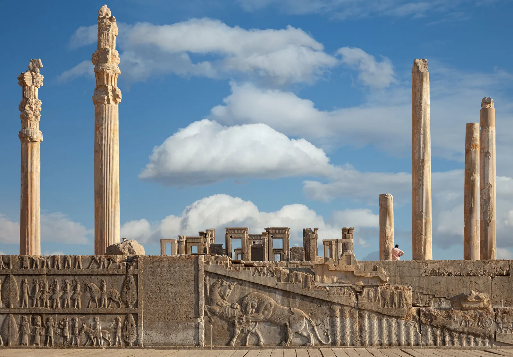
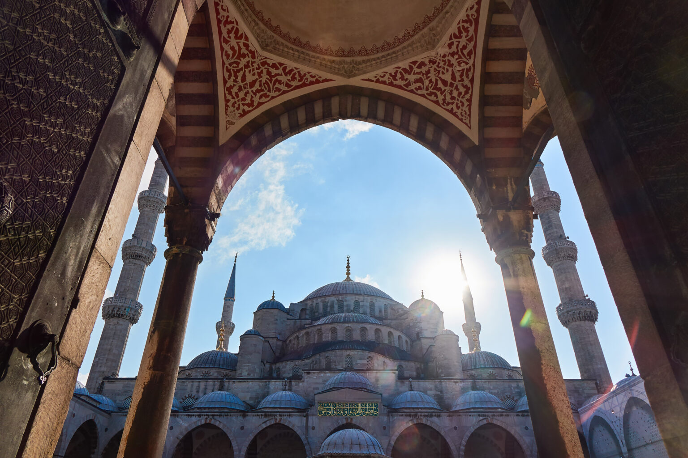

Jorden
Petra in Jordan, known as the “Rose City,” is a stunning ancient city carved into red sandstone cliffs. Built by the Nabataeans over 2,000 years ago, it was once a major trade hub. Famous sites like the Treasury, Monastery, and Royal Tombs make it one of the New Seven Wonders of the World.
$1100/-
$1999/-
City palace Udaipur
The City Palace of Udaipur is a magnificent complex located on the banks of Lake Pichola in Udaipur, Rajasthan, India. It's a blend of Rajasthani, Mughal, and European architecture, built over nearly 400 years by various rulers of the Mewar dynasty. The palace is renowned for its intricate marble and granite work, ornate balconies, towers, and cupolas, offering breathtaking views of the city and surrounding landscapes. It now serves as a museum, showcasing royal artifacts, and also includes a luxurious hotel.
Udaipur

Sahara
Sahara desert
The Sahara Desert, the world's largest hot desert, spans across much of North Africa. Its landscape is characterized by vast stretches of sand dunes (erg), rocky plateaus (hamada), and gravel plains. Despite its harsh conditions, the Sahara is home to a unique variety of desert-adapted plants and animals, and has a rich history of human migration and trade routes, like the Trans-Saharan trade. This arid region experiences extreme temperature shifts between day and night.
$2999/-
$1000/-
Humayu's tombu
That photo shows Humayun's Tombu, a magnificent example of Mughal architecture located in Delhi, India. It's the tomb of the second Mughal Emperor, Humayun, and was built in the mid-16th century by his first wife, Bega Begum. This stunning structure is often considered a precursor to the Taj Mahal and is a UNESCO World Heritage Site.
Humayu's Tombu


Iran
Iran
The ruins in the image are those of Persepolis, the ancient ceremonial capital of the Achaemenid Empire. Founded by Darius I around 518 BC in what is now modern-day Iran, the site is renowned for its magnificent monumental architecture and intricate stone reliefs. It served as a grand showcase for the power and wealth of the Persian kings until it was famously destroyed by Alexander the Great in 330 BC. Today, Persepolis stands as a UNESCO World Heritage site and is a testament to the sophisticated engineering and artistry of ancient Persia.
$2995/-
$5000/-
Turkey
Based on the image, the place is the Sultan Ahmed Mosque, commonly known as the Blue Mosque, in Istanbul, Turkey. It is a historic imperial mosque built between 1609 and 1616 during the rule of Sultan Ahmed I. The mosque is famous for its six minarets and stunning interior decorated with thousands of handmade blue tiles, which gives it its popular name.
Turkey

Ready to Travel?
Book your adventure today with our expert travel guides and custom itineraries.